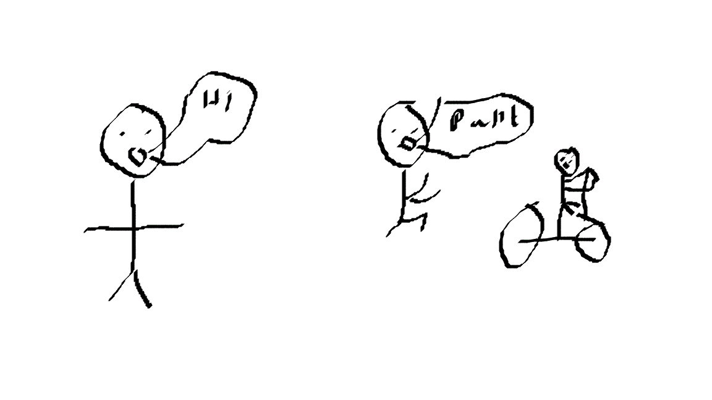

| You wake up and move to pick up your phone and read your texts of which there are 3 “can you deliver my quantum batteries to my lab on sulcana” from clone 8397 of batch 583, the second reads “pokemon red and blue remake 834528345234 ultra red and mega blue out today” from the gaming official Jakea the 3rd reads “where r u works in 15 minutes” print. will you run, cycle or walk to work? NOTE-cycling is the fastest- |  | |
walk |
run |
cycle |